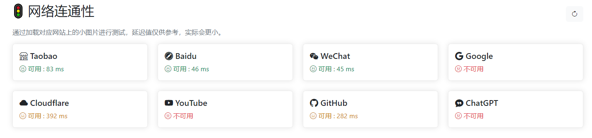
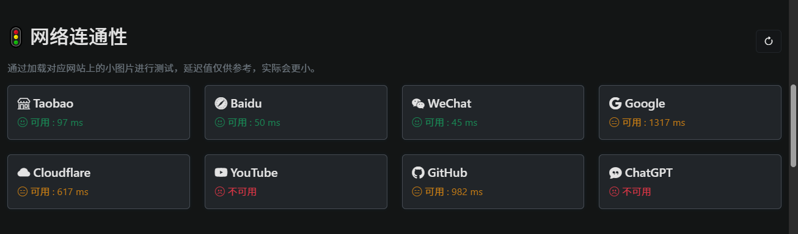
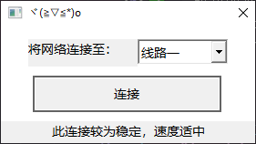
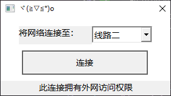
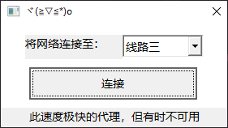

学生目录4月月度报告
各位数字游牧民：
在樱花盛开的四月，我们的学生目录又平稳度过了一个月！以下是本月技术升级的机密简报：
一、TLS分片技术支持
1. 技术原理
本系统通过多层级分片技术突破深度包检测（DPI）：
- TCP层分片：将初始TCP报文拆分为2-4个随机长度分片
- TLS记录层分片：将ClientHello的SNI字段分散到3个TLS记录中
- 混淆策略：每个分片添加16字节伪HTTP头，模拟常规Web流量特征
2. 反检测机制
实现FAKEdesync抗协议分析技术：
- 发送TTL值异常的伪造TCP握手包（使用TransmitFile/管道传输）
- 动态调整真实数据包发送间隔（50-300ms随机延迟）
- 支持TTL自动二分探测策略（--FAKE_ttl=query）
3. 技术参数
| 参数 | 作用 | 默认值 |
|---|---|---|
num_TCP_fragment |
TCP层最大分片数 | 3 |
TLS_frag |
TLS记录分片长度 | 512字节 |
FAKE_sleep |
假包发送间隔 | 150ms |
4. 实现效果
使用tls分片，你可以流畅地访问GitHub、Discord甚至是Google这些网站。
未使用tls分片
使用tls分片
现在tls分片技术已应用于代理服务的线路一，详见下一部分
二、代理服务超进化
"这次我们不仅翻墙，还要在墙上开全景天窗"
经过对代理端口的量子级改造：
- 新增多端口负载均衡技术
- 客户端升级至
v2.1版本，请前往共享目录下载最新版本，新增：- tls分片技术支持
- 线路切换的支持
- 稍微好看了一些的UI
- Github仓库地址：点击跳转
以下是软件的截图：



另外，在代理连接成功后将会跳转至一个网页
三、校园网接入服务
除开网络代理，手机用户更常使用的还是VPN，以下是4月1日至4月30日的流量统计


上个月使用的流量是1TB，这个月在有期中考试的情况下使用了1.5TB流量，总计2.5TB的流量！
我制作了更加详细但没有那么准确的日志分析，大家可以在此查看
四、欢迎来到我的世界!
我们在服务器上成功部署了Minecraft 1.21.5原版服务器
服务器IP：10.88.20.71:25565
特色玩法
悦币商城
关于服务器的搭建，详见此报告
关于如何访问服务器，请阅读学生目录中的教程
五、下月作战计划
-
MC服务器搭建
我们将继续完善MC服务器的搭建，欢迎有兴趣的同学加入我们！